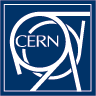

CERN (European Laboratory for Particle Physics) is an international laboratory where the W and Z bosons were discovered in 1983, and then in 2012 the Higgs boson
was discovered. CERN is the birthplace of the World-Wide Web. The Large Hadron Collider (see below) will continue searching for other new fundamental particles and forces.

For more information:
LHC: Large Hadron Collider
The planned Large Hadron Collider will inhabit the same tunnel as the LEP does.
It will accelerate two beams of protons to 7000 GeV in two adjoining 27-kilometer magnets, where they will circulate 11,000 times a second. The particles, going opposite directions, will be steered into head-on collisions in the experiment halls. In other experiments, it will be able to accelerate entire large nuclei up to 600 TeV.
The accelerator magnets will be kept at 1.8 degrees above absolute zero during operation so that they will be superconducting.
The Large Electron-Positron collider, went
into operation in 1989. It is 27 kilometers
in circumference. LEP was built for the
study of Z particles and has collected
millions of Z events, allowing precise
tests of the Standard Model. The current energy in the
center of mass can go up to 100 GeV,
but that will be revised to 200 GeV
in the near future.
SpS: Super Proton Synchrotron
The Super Proton Synchrotron is a 450 GeV proton and antiproton accelerator. The W+, W-, and Z were discovered in 1983 in the SpS.
PS: Proton Synchrotron
The Proton Synchrotron accelerates protons to 26 GeV.
We thank CERN for permission to use their images.
Question: Why is the
LEP ring so large compared to the SpS if they both are used to make Z's?
The LEP needs to be larger because electronsradiate more than protons do at the same energy when accelerated around a circle. The larger circle alleviates this.